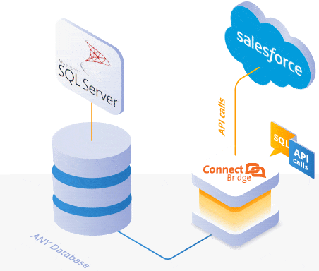

Conoce más
Trabajo


La constante comunicación entre computadora y ser humano nos permitirá crear, formar y desarrollar software o aplicaciones encargados de definir y administrar el comportamiento de dispositivos físicos y lógicos de una computadora, y al mismo tiempo permitiendo procesar de forma rápida y eficientemente grandes y complejas cantidades de información. Los lenguajes de programación se clasifican en Alto nivel y Bajo Nivel, en donde sus características son las siguientes:
- Bajo Nivel: Son aquellas instrucciones que trabajan sobre el hardware, es decir, con lo es tangible de la computadora como son microprocesadores y por lo tanto depende de la estructura que se tenga en la computadora.
- Alto Nuvel: Son aquellas instrucciones que con base a algoritmos se puede desarrollar una solución a los problemas humanos, es más sencillo de codificar y posee estructuras y sintaxis definidas. Por ejemplo: Python, C, C++, Java, PHP, Fortran, entre otros.


Campo Laboral
Un ingeniero en computación se puede desarrollar en diversos campos laboral, además de conocer que una base esencial es el conocimiento de la programación, también es importante conocer el manejo, lógica y estructura de una computadora, y por lo que estar alrededor de la computación se puede conocer y aprender diversos temas que hacen puntual, complejo e interesante. Existen diversos campos laborales que pueden desarrollarse, en donde exista computadoras o dispositivos de control automático en sectores públicos como privados.
El ingeniero desarrolla las siguientes habilidades como son: Análisis y diseño de redes de computadoras, de sistemas para aplicaciones complejas utilizando bases de datos y técnicas avanzadas de desarrollo de sistemas. Instrumentación de estrategias para operar con seguridad programas, equipos y redes de telecomunicaciones en todos sus niveles. Diseño e instalación de redes de teleinformática. Organización, dirección y administración de centros de cómputo.
Los campos en que un ingeniero se puede desarrollar son las siguientes:
- Ingeniero en Software y Hardware
- Bases de datos
- Inteligencia de negocios
- Redes y seguridad
- Sistemas Inteligentes
- Ciberseguridad
- Desarrollador
- Programador
- Entre otras áreas de trabajo.
Su labor influye en los sectores productivo, económico, de planeación y de servicios, el área científica y la investigación, al generar las soluciones que la población le demanda.



Un ingeniero en computación se puede desarrollar en diversos campos laboral, además de conocer que una base esencial es el conocimiento de la programación, también es importante conocer el manejo, lógica y estructura de una computadora, y por lo que estar alrededor de la computación se puede conocer y aprender diversos temas que hacen puntual, complejo e interesante. Existen diversos campos laborales que pueden desarrollarse, en donde exista computadoras o dispositivos de control automático en sectores públicos como privados.
El ingeniero desarrolla las siguientes habilidades como son: Análisis y diseño de redes de computadoras, de sistemas para aplicaciones complejas utilizando bases de datos y técnicas avanzadas de desarrollo de sistemas. Instrumentación de estrategias para operar con seguridad programas, equipos y redes de telecomunicaciones en todos sus niveles. Diseño e instalación de redes de teleinformática. Organización, dirección y administración de centros de cómputo.
Los campos en que un ingeniero se puede desarrollar son las siguientes:- Ingeniero en Software y Hardware
- Bases de datos
- Inteligencia de negocios
- Redes y seguridad
- Sistemas Inteligentes
- Ciberseguridad
- Desarrollador
- Programador
- Entre otras áreas de trabajo.